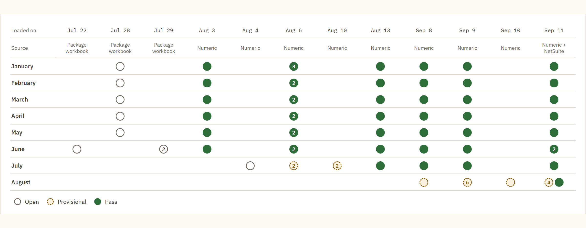

After the package is sent
Once our monthly package goes to the CEO, a later adjustment shouldn't quietly change the numbers. The dashboard had kept all 74 loads as of September 18, and no closed month is flagged as changed.
The problem
Every close, something would change after I thought the numbers were final. It happened maybe 2 to 4 times per close, and I never actually counted.
Before the dashboard, a re-run meant pulling and consolidating everything again, with nothing kept to compare against. That's fine while I'm still working on the numbers. But once the package has gone to the CEO, a change needs to show up against what we already sent, not get quietly absorbed into a new total.
Every load is a run
Each time I load a month, the dashboard keeps that load as a run with a status, instead of overwriting the last one. Between July 22 and September 11 there were 74 of them.
A month is Open while the period's still open and people are still working on it. Provisional means I want the numbers pulled so I can do a first pass and some analysis, but they aren't final yet.
The very first loads, from the package workbook in late July, show as Open even for months that were long closed. That was just the default before I'd set up the statuses.
Then its loads turn Pass, and in the run history no month ever went back.
August is a good example. I loaded it 12 times as Provisional between September 8 and 11, and it turned Pass on the 11th.

Watching the closed months
Flagging a closed month that comes back different on a reload was my requirement. I wanted any adjustment to show up against what we'd already sent.
When a sent month does change, it depends on the change, but usually we send the package again with a note explaining it.
It hasn't fired on a real change yet. No closed month is flagged as changed, which also means the flag itself hasn't been tested on a real one.
What the tie-outs prove
Every month gets two checks. Total assets have to equal total liabilities and equity, and net income from Numeric has to equal net income in the package. All eight closed months this year pass both.
The first tells me the balance sheet the code builds still balances. The second tells me the package says the same thing as the close platform, where our commentary gets written.
The balance check allows up to $0.02, and some months use it. I hate that. It should tie to the penny.
Switching sources without losing history
On September 11 I reloaded all eight months from two NetSuite reports I built, one P&L and one balance sheet. Before that, the loads came from the package workbook and then from Numeric. Every one of those earlier runs is still there.
Claude pulls the reports from the ERP, code builds every number, and the result gets tied back to the ERP account by account and in total.
Limits and what's next
- The flag on closed months hasn't caught a real change yet, so it's only been tested on months that didn't change.
- The balance check lets up to $0.02 through. It should be zero.
- The balance sheet by entity and the department detail still load from Numeric.
- The overview still says "Numeric consolidated basis" even though the P&L and balance sheet come from NetSuite now.
How these numbers are sourced
Parsed from the dashboard itself (built September 18, 2026), through a structural extract with no amounts in it: the 74 runs and their statuses, the order each month moved through them, no closed month flagged as changed, the two tie-outs in all eight months, the $0.02 tolerance, the switch to NetSuite reports on September 11 and the stale overview label.
My estimate, not a count: 2 to 4 re-runs per close.
My own account: why I built it, what Open and Provisional mean, why the first loads show as Open, the requirement to flag closed months, sending the package again with a note, building the NetSuite reports, and that Claude pulls the reports while code builds the numbers and ties them. Claude wrote the code.